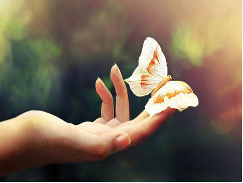

作者：张旭语 来源：国防生学院 发布时间：2012-6-30
“你总说毕业遥遥无期，转眼就各奔东西。”耳畔再次响起老狼《同桌的你》，不觉已是泪流满面，即使撑起灿烂时笑容送别离别的同学，心中依旧是哽咽不语。曾经的一切就这样在我们不经意中悄然滑过，当我们蓦然发现开始试图挽留的时候，他就像指间的沙子，你越是紧握，他流失的就越快。

“大学”一个神圣而庄严的词汇，无数人心目中的象牙塔。在踏进大学的刹那，仿佛捕捉到了生命为喝彩而绽放的礼花，霎时人生似乎凭填了许多色彩。闲潭云影日悠悠，物换星移几度秋，弹指间已经是白驹过隙，入学时一张张的如花笑靥依旧清晰在目，如今却要挂上离别的泪花。时光似乎也被离别的气息感染，脚步变得轻柔而和缓，却是道不出的沉重。我们的青春在大学凝结成茧，而此刻这孕育我们的茧破了，在这阵痛之后我们将化为彩蝶舞动自己的翅膀去追寻那属于自己的蓝天。
曾记得入学时，喜不自禁、窘态百出的自我介绍；曾记得军训时汗如雨下，欣喜而有烦躁的共同抱怨；曾记得大家刚刚相处时，战战兢兢、磕磕绊绊的轰然一笑；曾记得一起胡侃乱吹时，毫不相让的少年意气；曾记得一起逃课，半路相遇时的宛然一笑；曾记得考试前大呼奈何，临抱佛脚的相互诘责；曾记得……太多太多的记忆让我只记得这座校园中遗落了我们的一个个青春故事，即使我们绞尽脑汁想尽办法依旧也带不走，因为它太过沉重。
曾经的梦想是在大学中挥洒人生最为奢侈的青春，年轻人的错误上帝也会原谅，20岁的血液愿意为任何一个理由而沸腾。于是大学就充满了青春的丹唇柔膝如充满浪漫气息的阳春白雪，又如江南水乡夜班渔船的悠扬曲调。也许当老年人会对现在的行为莫名其妙，而青春就是这一切的理由。曾经年少青衫湿，年少的轻狂才有那粪土当年万户侯的气势，少年不羁，才有那王侯将相宁有种乎的巍然不惧。
大学的生活似乎就是那涓涓细流，固执的寻找着自己要沉淀的尽头。没有那大江拍岸的磅礴，却是蜿蜒缠绵，不在乎尽头怎样的结局，但却一定要留意沿途的风景，伴随着微风绵延着汲取着春的味道。不像大海那般急涌暗流、阴晴难定，却是清澈见底而又碾转出万般的柔情。可如今这细流终究是到了尽头，我们也终将融入那广博的海洋。但是无论将来我们流到何处我们都不会忘记涓流中的点滴，因为正式这点滴汇成了最终的广博。大学生活就像一本书，书中百态言如人生，我们总是匆匆的翻着，只可惜尚未品位出此中百味就蓦然发现已经到了书的尽头。而更可惜的是大学生活又终究不是一本书，你已经没有机会再重新翻一遍了。哪怕你觉得读的太过轻松，许多珍贵的角落只是一瞥而过，悔不当初没有精读细读。然而这本书已经永久的合上，我们只能依照脑海中的记忆去回想当初阅读时的畅快淋漓，缅怀那沉浸在书海中的美好时光。
时间的车轮总是不急不缓的向前滚动着，不曾停留也没有加速过，永远是那么千篇一律。后面留下的只有一道长长
的碾痕，甚至连这碾痕也终将随着时间的滚动而逐渐消失。因此我们的目光应该越过这些碾痕看向车轮的前方，因为那里是我们即将要行走的道路。有道是相濡以沫不如相忘于江湖，为了彼此的前程也好，未来的幸福也罢，就让我们在走过这离别的长亭之后俩俩相忘。我们的未来正酝酿在哪朝阳升起的朝晖之中，而不是沉浸于那即将逝去的晚霞。唯有不停的奔跑才能看到更多更美的风景，或许在哪山顶之上我们依然那会相聚，共同领略那一览众山小的豪情。忆往昔之不谏，知来者之可追。往昔既逝，来者何辞？
大学生活是一个幸福的茧，我们从生活的点滴之中抽出一根根幸福的丝，努力而小心的编织着这只裹满了幸福欢笑，间或夹杂着几丝悲伤和泪水的茧，这几丝悲伤和泪水却是让这茧变的更加完美。徜徉在阳光下，我们在这只茧中幸福的成长，它温暖而安逸，似乎可以作为我们一辈子的港湾。但是它终究有一天会破碎，因为它承载不了我们的翅膀，当我们破茧成蝶之后能让我们翱翔的只有天空。
让我们再最后看一眼这孕育我们的茧吧！虽然它已经破碎，但我们不会忘记它曾经的坚实和温暖；虽然它已凌乱，但我们不会忘记我们曾经用自己的欢笑和梦想缓缓的织，绵绵的编。即使我们翱翔在最美丽的蓝天野不会将这一切忘却。
挥一挥自己初长成的彩翼，击向那朝阳中金色的辉煌。我们已经是一只七彩的蝶，我们眩目的色彩令百花黯然自怜，翩跹的舞姿让鸟儿忘却了飞翔。我们是最美丽的精灵，是湛蓝天空下最动人的色彩。多年的等待只为这一刻的飞翔，为此我们惟有绽放最美丽的光芒。
曾经将童话揉进幻想，用希望调处芬芳。儿时的梦依稀就在前方。仿若千年的望，万年的盼终于结出了果实，沉甸甸的，似乎承载着无数的美好和梦想。我们将将这枚果实酿成最甜美的果酿，当满园成熟之时我们将是最幸福的园丁，因为这是我们的勤劳凝结成收获的希望。
往昔种种譬如昨日，大学为我们的人生沉淀了最宝贵的底蕴，让我们的理想扎根于最肥沃的土壤。我们有“直挂云帆济沧海，乘风破浪会有时”的豪情；我们有“天生我材必有用，千金散尽还复来”是自信；我们更有“任它雨打风吹，我自巍然不动”的坚韧。大学让我们成长，大学也教会了我们坚强。
悲欢聚散一杯酒，南北东西万里程。《同桌的你》依旧兀自跳动它扣人的旋律，心中溢满的悲伤似乎悄然离去，而脸上的笑容却如春天地花蕾忽然绽放，这炎炎夏日似乎也变得温暖凉爽起来。